El propósito principal del ANOVA es comparar varias medias de manera simultánea para verificar si al menos una de ellas es significativamente diferente de las demás. A diferencia de las pruebas t de Student, que comparan sólo dos grupos, ANOVA es útil cuando se tienen tres o más grupos.
Ejemplo 1. Supongamos que queremos investigar si tres métodos de enseñanza diferentes (\(A\), \(B\) y \(C\)) tienen un efecto distinto en el rendimiento académico de los estudiantes. El rendimiento académico se mide en una escala numérica de 0 a 100, y se recopilan datos de 15 estudiantes que fueron asignados aleatoriamente a uno de los tres métodos de enseñanza. La siguiente tabla muestra los resultados obtenidos.
Se desea probar la hipótesis nula que indica que el rendimiento medio de cada tipo de enseñanza es el mismo, contra la hipótesis alternativa que establece que al menos uno el de los métodos tiene un rendimiento medio distinto, es decir: \[ H_0:\mu_A = \mu_B = \mu_C \quad \text{vs} \quad H_1: \text{existe al menos un }\mu_i \text{ distinto}
\]
boxplot(r1, r2, r3, names =c("Método A", "Método B", "Método C"), ylab ="Rendimiento", main ="Rendimiento de tres métodos de enseñanza", col ="dodgerblue")
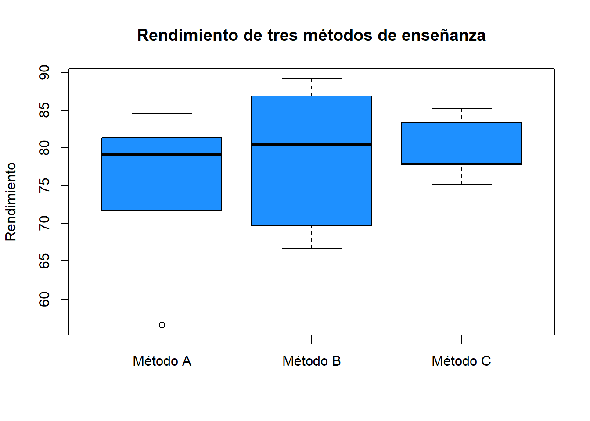
4.1 Hipótesis de trabajo
El análisis de varianza se basa en las siguientes hipótesis:
Hipótesis nula (\(H_0\)): Las medias de todos los grupos son iguales.
Hipótesis alternativa (\(H_1\)): Al menos una de las medias es diferente.
4.2 Procedimiento
El procedimiento básico para realizar un ANOVA incluye los siguientes pasos:
Cálculo de la media global (media de todas las observaciones).
Cálculo de la variabilidad entre los grupos: Esto mide la variación debido a las diferencias entre las medias de los grupos.
Cálculo de la variabilidad dentro de los grupos: Mide la variación dentro de cada grupo, es decir, la variabilidad de las observaciones individuales con respecto a la media del grupo.
Cálculo de la estadística\(F\): Esta estadística se calcula como la razón entre la variabilidad entre los grupos y la variabilidad dentro de los grupos. La fórmula es:
\[ F = \frac{\text{Varianza entre grupos}}{\text{Varianza dentro de los grupos}}
\]
Evaluación de la significancia estadística: Se compara el valor de \(F\) con un valor crítico de una tabla de distribución \(F\), teniendo en cuenta los grados de libertad y el nivel de significancia (\(\alpha\)). Si el valor de \(F\) es mayor que el valor crítico, se rechaza la hipótesis nula.
Cálculo del valor\(p\): En muchos casos, se utiliza el valor \(p\) para evaluar la significancia. Si el valor \(p\) es menor que el nivel de significancia \(\alpha\)), se rechaza la hipótesis nula.
Interpretación de los resultados: Una vez realizada la prueba de ANOVA, si se rechaza la hipótesis nula, es necesario realizar una prueba post-hoc (como el test de Tukey) para identificar qué pares de grupos son significativamente diferentes entre sí.
4.3 Modelo General ANOVA
El modelo general para el ANOVA se puede expresar como:
\[
Y_{ij} = \mu + \tau_i + \epsilon_{ij},
\]
donde:
\(Y_{ij}\) es el valor observado para el \(j\)-ésimo elemento del \(i\)-ésimo grupo.
\(\mu\) es la media global.
\(\tau_i\) es el efecto del \(i\)-ésimo grupo (tratamiento).
\(\epsilon_{ij}\) es el error aleatorio (residuo), que sigue una distribución Normal con media cero y varianza \(\sigma^2\).
Las hipótesis a probar son:
Hipótesis nula (\(H_0\)): Las medias de los grupos son iguales, es decir, \(\mu_1 = \mu_2 = \dots = \mu_k\),
Hipótesis alternativa (\(H_1\)): Al menos una de las medias de los grupos es diferente,
donde \(\mu_i = \mu + \tau_i\).
4.4 Suma de Cuadrados (Sum of Squares)
4.4.1 Suma de Cuadrados Total (\(SS_{\text{Total}}\)):
Donde: - \(k\) es el número de grupos (tratamientos). - \(m_i\) es el número de observaciones en el \(i\)-ésimo grupo. - \(\bar{Y}_{i\cdot}\) es la media del \(i\)-ésimo grupo.
4.4.3 Suma de Cuadrados dentro de los Grupos (\(SS_{\text{Dentro}}\)):
El estadístico de prueba \(F\) se calcula como la razón de las medias cuadráticas:
\[
F = \frac{MS_{\text{Entre}}}{MS_{\text{Dentro}}}
\]
Si el valor calculado de \(F\) es mayor que el valor crítico de la distribución \(F\) en un nivel de significancia determinado, se rechaza la hipótesis nula de que todos los grupos tienen medias iguales.
Ejemplo (continuación).
H₀: Las medias de los rendimientos académicos de los tres métodos de enseñanza son iguales.
H₁: Al menos un método de enseñanza tiene una media de rendimiento diferente.
Para realizar el análisis de varianza usamos el comando aov.
X =data.frame(Metodo =as.factor(rep(c("Metodo1", "Metodo2", "Metodo3"), c(5,5,5))), Rendimiento =c(Raw$Metodo.A, Raw$Metodo.B, Raw$Metodo.C))print(X)
ANOVA =aov(Rendimiento ~ Metodo, data = X)summary(ANOVA)
Df Sum Sq Mean Sq F value Pr(>F)
Metodo 2 74.2 37.11 0.457 0.644
Residuals 12 974.3 81.19
El p-valor de la prueba es grande por lo que no podemos rechazar \(H_0\), es decir, no hay evidencia para pensar que los resultados de los métodos de enseñanza sean distintos.
4.7 Supuestos del ANOVA
Para que los resultados de ANOVA sean válidos, deben cumplirse ciertos supuestos:
Independencia de las observaciones: Las observaciones deben ser independientes entre sí.
Normalidad: Los datos dentro de cada grupo deben seguir una distribución normal.
Homogeneidad de varianzas (homocedasticidad): Las varianzas dentro de cada grupo deben ser aproximadamente iguales.
4.8 Ventajas del ANOVA
Permite comparar más de dos grupos al mismo tiempo.
Es más eficiente que realizar múltiples pruebas t, lo que reduce el riesgo de cometer un error tipo I.
4.9 Desventajas del ANOVA
Sensible a los supuestos de normalidad y homogeneidad de varianzas.
No indica qué grupos son significativamente diferentes entre sí, solo si hay diferencias en general.
Ejemplo: crecimiento de maíz. Para hacer crecer maíz, se aplican 5 tratamientos diferentes a las parcelas y se mide el peso (en onzas) de mazorcas elegidas al azar para ver si alguno de los tratamientos hace alguna diferencia. Los tratamientos son:
1. Nematodes
2. Avispas
3. Nematods y avispas
4. Bacterias
5. Control
La siguiente gráfica un boxplot de los datos de cada uno de los tratamientos.
# Es importante convertir la variable que indica los grupos a una variable tipo factorData$Tratamiento =as.factor(Data$Tratamiento)# Boxplot de cada tratamiento plot(Data$Tratamiento, Data$Peso, ylab ="Peso de las mazorcas (onzas)", xlab ="", col ="lightgreen")
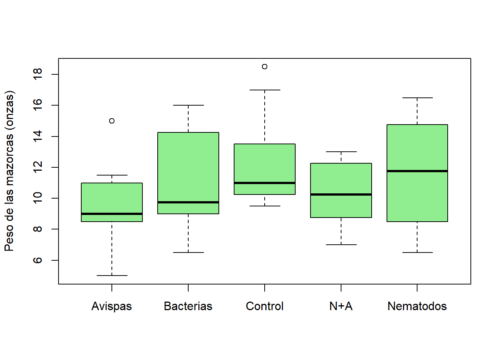
Abajo se muestra la tabla donde se resume la prueba F del análisis de varianza para probar
Df Sum Sq Mean Sq F value Pr(>F)
Tratamiento 4 52.3 13.077 1.646 0.176
Residuals 55 436.9 7.944
Dado que el \(p\)-valor de análisis de varianza es muy grande, no tenemos evidecia para rechazar la hipótesis nula, lo cual implica que no podemos decir si alguno de los tratamientos realmente hace una diferencia en los pesos de las mazorcas de maíz.
4.10 Validación de supuestos
Para validar el ANOVA, es necesario determinar si los datos son normales y si las variaznas de cada grupo son iguales. Para esto podemos hacer un análisis gráfico de los residuales del modelo.
# Graficas de diagnóstico del modelo ANOVAplot(ANOVA)
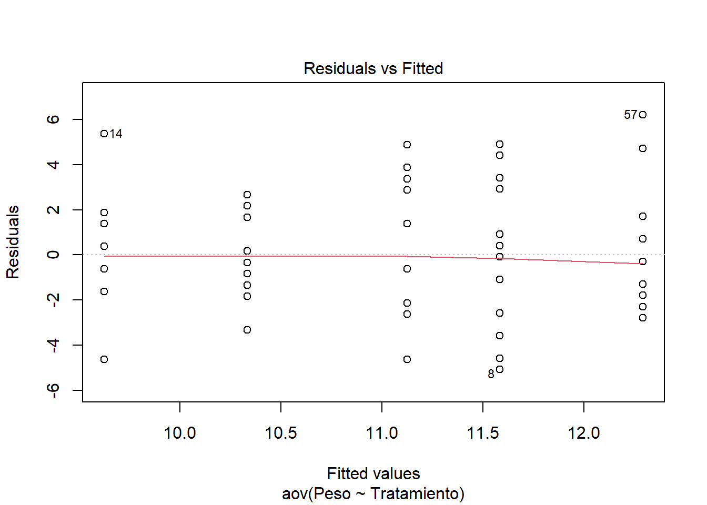
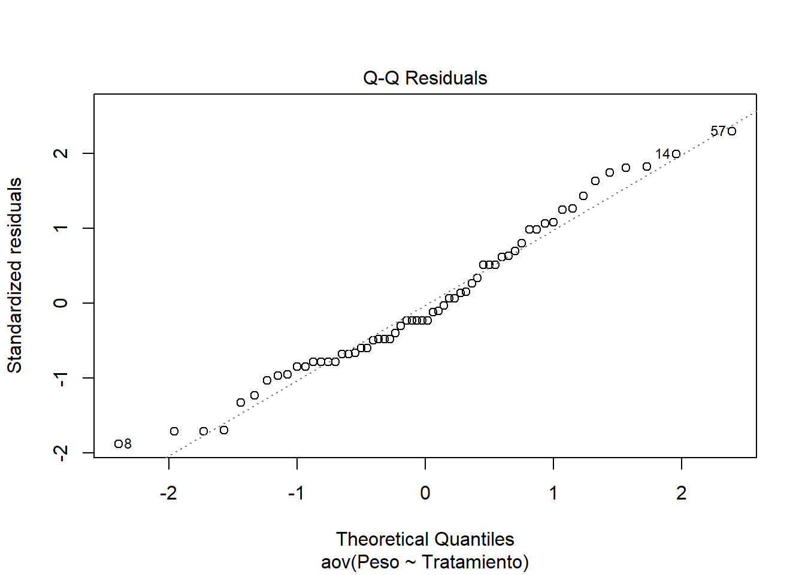
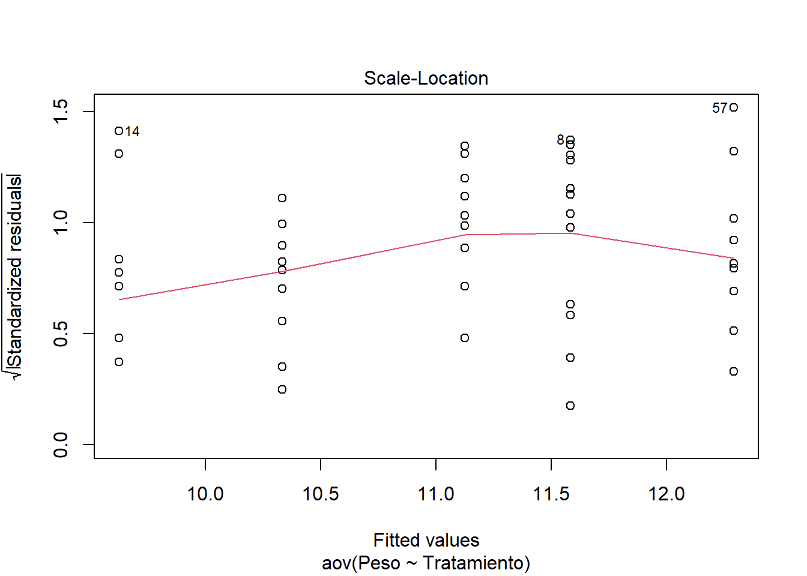
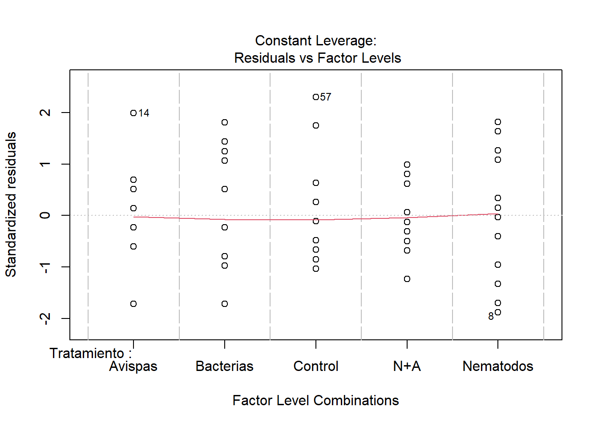
Las gráficas de residuales muestran que es razonable pensar que los datos son normales y que las desviaciones estándar de cada grupo son similares. Si esto no es claro, es posible hacer pruebas de hipótesis para juzgar estos supuestos de forma más rigurosa.
4.10.1 Prueba de normalidad
La prueba de normalidad de Shapiro-Wilks se usa para probar la hipótesis nula que establece que los datos siguen una distribución Normal. Podemos aplicar la prueba a cada uno de los grupos definidos por la variable Tratamiento.
by(Data$Peso, Data$Tratamiento, shapiro.test)
Data$Tratamiento: Avispas
Shapiro-Wilk normality test
data: dd[x, ]
W = 0.93081, p-value = 0.3888
------------------------------------------------------------
Data$Tratamiento: Bacterias
Shapiro-Wilk normality test
data: dd[x, ]
W = 0.89991, p-value = 0.1582
------------------------------------------------------------
Data$Tratamiento: Control
Shapiro-Wilk normality test
data: dd[x, ]
W = 0.83092, p-value = 0.02151
------------------------------------------------------------
Data$Tratamiento: N+A
Shapiro-Wilk normality test
data: dd[x, ]
W = 0.94232, p-value = 0.5287
------------------------------------------------------------
Data$Tratamiento: Nematodos
Shapiro-Wilk normality test
data: dd[x, ]
W = 0.94445, p-value = 0.5578
Como se puede ver, la mayoría de los p-valores son grandes por lo que no se puede rechazar la hipótesis de normalidad. El único grupo donde existe la posibilidad de que los datos no sean normales es el grupo de control, pero la evidencia no es cotundente, sin mencionar que tenemos pocos datos.
4.10.2 Pruebas de homogeneidad de varianzas
La prueba de Bartlett es una prueba de homogeneidad de varianzas. La hipótesis nula establece que las variaznas de todos los grupos son las mismas. Es sensible a la falta de normalidad en los datos.
bartlett.test(Data$Peso, Data$Tratamiento)
Bartlett test of homogeneity of variances
data: Data$Peso and Data$Tratamiento
Bartlett's K-squared = 3.9829, df = 4, p-value = 0.4083
El \(p\)-valor es grande por lo que no hay evidencia en contra de que los grupos tengan la misma varianza.
La prueba de Levene hace lo mismo que la prueba de Bartlett pero es menos sensible a la falta de normalidad.
leveneTest(Data$Peso, Data$Tratamiento)
Levene's Test for Homogeneity of Variance (center = median)
Df F value Pr(>F)
group 4 1.1028 0.3645
55
La prueba de Fligner-Killeen es una prueba no parámetrica para la homogeneidad de varianzas.
fligner.test(Data$Peso, Data$Tratamiento)
Fligner-Killeen test of homogeneity of variances
data: Data$Peso and Data$Tratamiento
Fligner-Killeen:med chi-squared = 4.0831, df = 4, p-value = 0.3949
En este ejemplo, todas las pruebas nos dan la misma conclusión, no hay evidencia en contra de la homogeneidad de varianzas.
4.11 Pruebas múltiples
Cuando se rechaza la hipótesis nula en un análisis de varianza, es necesrio saber que tratamientos son los que hacen diferencia en la variable respusta. Para esto hacemos pruebas de comparación de medias para cada par de tratamientos, o bien, construimos intervalos de confianza para la diferencia de medias de cada par de tratamientos. Esto se debe hacer con un nivel de significancia corregido de forma que se obtenga el nivel de significancia global requerido. Los métodos más comunes para realizar esto son: corrección de Bonferroni, prueba LSD de Fisher (Least Significant Difference), y la prueba HSD de Tukey (Honest Significant Difference). Los resultados de estos análisis se muestran abajo.
Pairwise comparisons using t tests with pooled SD
data: Data$Peso and Data$Tratamiento
Avispas Bacterias Control N+A
Bacterias 1.00 - - -
Control 0.24 1.00 - -
N+A 1.00 1.00 0.94 -
Nematodos 0.94 1.00 1.00 1.00
P value adjustment method: bonferroni
Como se puede ver, los p-valores para todas las comparasiones son muy grandes, confirmando los resultados de ANOVA que indcan que no hay diferencias claras entre los tratamientos.
4.11.2 Prueba LSD
La siguiente gráfica muestra los intervalos de confianza para las medias de los diferentes tratamientos utilizando un nivel de significancia corregido, de forma que el nivel de significancia global de las comparasiones múltiples sea 0.05. Como todas las líneas tienen la misma letra y color, esto indica que no hay evidencia de que los tratamiento hagan diferencia.
Notar que, si no se usa una corrección en el nivel de significancia, entonces los intervalos de confianza si muestran diferencias, lo cual puede llevar a conclusiones erroneas.
LSD =LSD.test(ANOVA, "Tratamiento")plot(LSD)
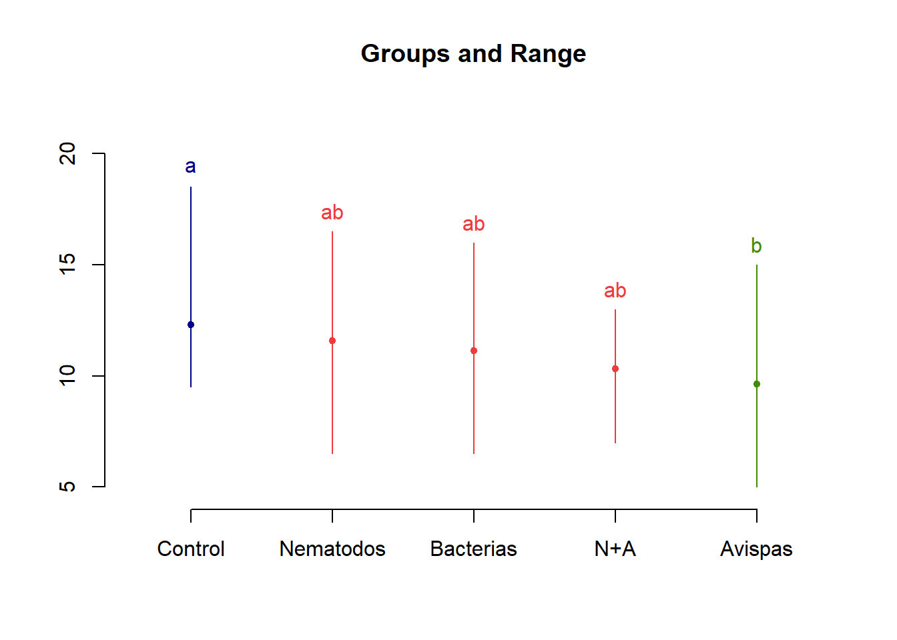
4.11.3 Prueba de Tukey
La prueba de Tukey permite hacer comparasiones multiples entre los tratamientos y se recomienda cuando el experimento está balanceado, es decir, cuando el número de obsrvaciones de cada tratamiento es el mismo. La siguiente gráfica muestra los intervalos de confianza corregidos para la comparación dos a dos la medias de cada tratamiento.
Tukey =TukeyHSD(ANOVA, "Tratamiento")# Cambia los márgenes de la grafica# default par(mar = c(5.1, 4.1, 4.1, 2.1))par(mar =c(5, 10, 5, 5)) # Cambia los márgenes de la gráficaplot(Tukey, las=1)
Se puede ver que todas las comparaciones múltiples indican que no hay grupos distintos, lo cual ya sabíamos de la prueba F del análisis de varianza.
Ejemplo 3: Retinosis. En un estudio de retinosis pigmentaria, 211 pacientes fueron agrupados en 4 grupos dependiendo del patrón de herencia de la enfermedad. Para cada paciente, la agudeza visual se midió en cada ojo y los dos valores fueron promediados. Los datos se encuentran en el archivo retinosis.csv. Se desea saber si existe alguna diferencia en la agudeza visual debida al patrón de herencia.
D$Herencia: Autosomal dominant RP
Min. 1st Qu. Median Mean 3rd Qu. Max.
-6.4293 -3.2198 -1.1299 -0.9122 0.8414 5.0127
------------------------------------------------------------
D$Herencia: Autosomal recessive RP
Min. 1st Qu. Median Mean 3rd Qu. Max.
-9.5977 -1.4307 2.1303 0.7208 3.3117 7.0523
------------------------------------------------------------
D$Herencia: Isolate RP
Min. 1st Qu. Median Mean 3rd Qu. Max.
-10.6950 -3.7569 -0.5818 -0.7803 1.9984 10.1342
------------------------------------------------------------
D$Herencia: Sex-linked RP
Min. 1st Qu. Median Mean 3rd Qu. Max.
-10.2491 -6.5135 -2.2533 -3.2796 0.1792 2.1486
par(mar =c(11,4,2,2))plot(D$Herencia, D$Agudeza, las =2, xlab ="", ylab ="Agudeza visual")
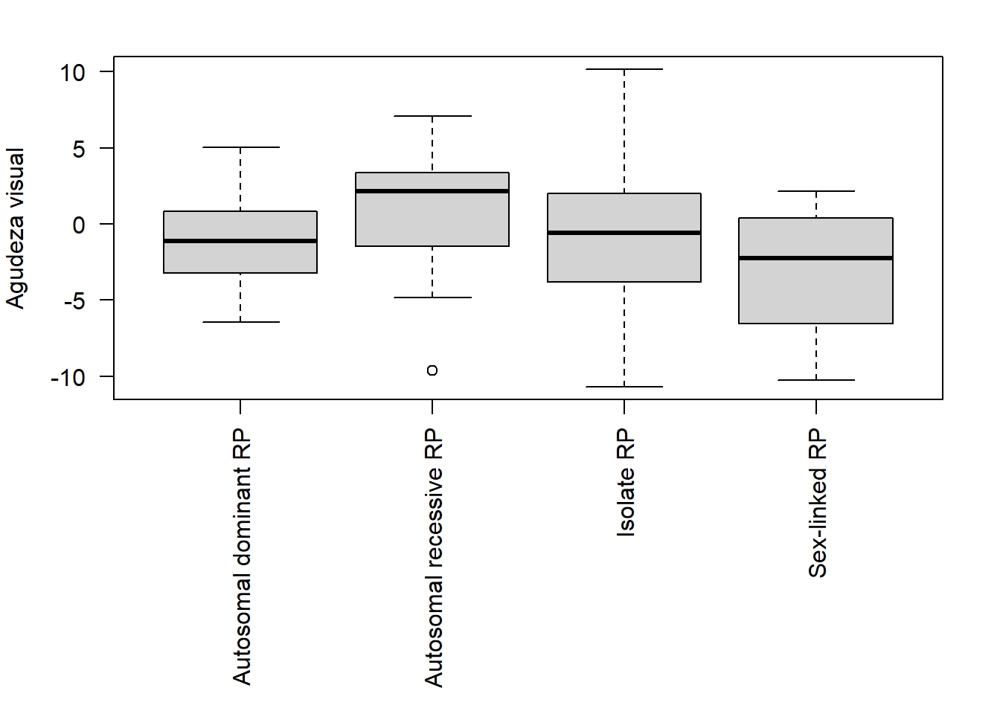
Ahora corremos la prueba de análsis de varianza.
ANOVA =aov(Agudeza ~ Herencia, data = D)summary(ANOVA)
Df Sum Sq Mean Sq F value Pr(>F)
Herencia 3 156 52.12 3.128 0.0268 *
Residuals 207 3449 16.66
---
Signif. codes: 0 '***' 0.001 '**' 0.01 '*' 0.05 '.' 0.1 ' ' 1
Como el p-valor es pequeño, al menos si elegimos un nivel de significancia de 0.05, entonces rechazamos al hipótesis nula. Es decir, existe al menos un tipo de herencia de la retinosis que hace que la agudeza visual media sea distinta.
Para identificar que grupos son distintos, hacemos una análisis de pruebas múltiples.
Tukey =TukeyHSD(ANOVA, "Herencia")# Cambia los márgenes de la grafica# default par(mar = c(5.1, 4.1, 4.1, 2.1))par(mar =c(5, 20, 3, 2)) # Cambia los márgenes de la gráficaplot(Tukey, las=1)
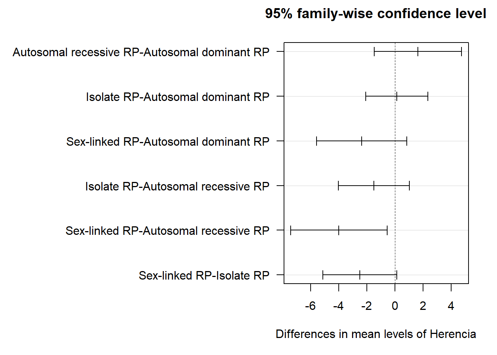
print(Tukey)
Tukey multiple comparisons of means
95% family-wise confidence level
Fit: aov(formula = Agudeza ~ Herencia, data = D)
$Herencia
diff lwr upr
Autosomal recessive RP-Autosomal dominant RP 1.6329463 -1.486179 4.7520719
Isolate RP-Autosomal dominant RP 0.1318715 -2.082985 2.3467278
Sex-linked RP-Autosomal dominant RP -2.3674494 -5.584582 0.8496830
Isolate RP-Autosomal recessive RP -1.5010748 -4.021904 1.0197544
Sex-linked RP-Autosomal recessive RP -4.0003957 -7.435353 -0.5654383
Sex-linked RP-Isolate RP -2.4993209 -5.140453 0.1418108
p adj
Autosomal recessive RP-Autosomal dominant RP 0.5284718
Isolate RP-Autosomal dominant RP 0.9986900
Sex-linked RP-Autosomal dominant RP 0.2286967
Isolate RP-Autosomal recessive RP 0.4142075
Sex-linked RP-Autosomal recessive RP 0.0151511
Sex-linked RP-Isolate RP 0.0709380
De la prueba de Tukey concluimos que los grupos que tienen una agudeza visual distinta son Sex-linekd RP y Autosomal recessive RP. Además, la agudeza visual es más grande en el grupo Autosomal recessive RP que en el grupo Sex-linekd RP.
Pairwise comparisons using t tests with pooled SD
data: D$Agudeza and D$Herencia
Autosomal dominant RP Autosomal recessive RP Isolate RP
Autosomal recessive RP 1.000 - -
Isolate RP 1.000 0.747 -
Sex-linked RP 0.348 0.017 0.090
P value adjustment method: bonferroni
Este método nos da la misma conclusión que el método de Tukey.
Ahora hacemos la validación de los supuestos. Primero vemos las gráficas de residuales.
plot(ANOVA)
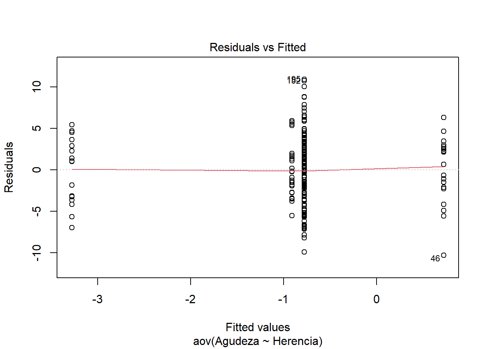
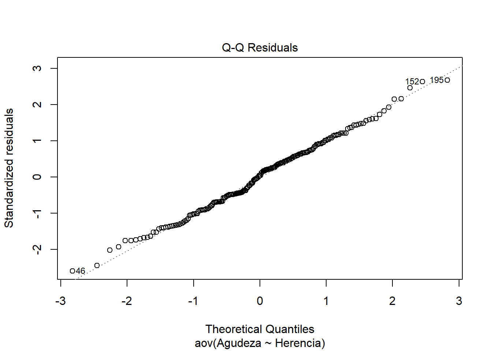
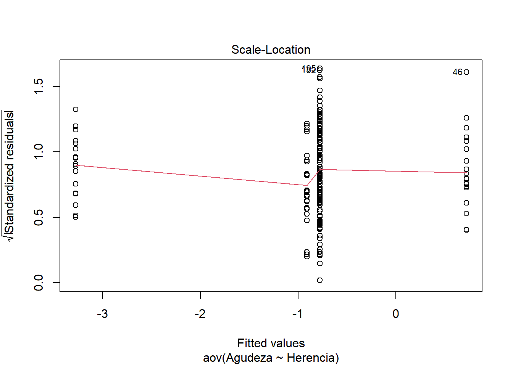
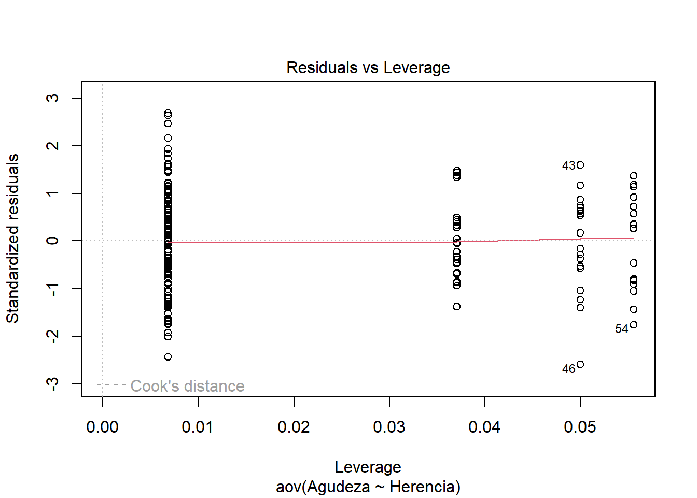
A primera vista, no parece haber problemas con los supuestos de normalidad y homogeneidad de varianzas. Para tener más certeza, hacemos las pruebas de hipótesis de normalidad primero.
by(D$Agudeza, D$Herencia, shapiro.test)
D$Herencia: Autosomal dominant RP
Shapiro-Wilk normality test
data: dd[x, ]
W = 0.94182, p-value = 0.1352
------------------------------------------------------------
D$Herencia: Autosomal recessive RP
Shapiro-Wilk normality test
data: dd[x, ]
W = 0.93658, p-value = 0.2064
------------------------------------------------------------
D$Herencia: Isolate RP
Shapiro-Wilk normality test
data: dd[x, ]
W = 0.98998, p-value = 0.384
------------------------------------------------------------
D$Herencia: Sex-linked RP
Shapiro-Wilk normality test
data: dd[x, ]
W = 0.93669, p-value = 0.2542
Todas las pruebas tienen p-valores grandes por lo que no hay evidencia en contra de la normalidad de los datos.
Ahora hacemos las prueba de homogeneidad de varianzas.
bartlett.test(D$Agudeza, D$Herencia)
Bartlett test of homogeneity of variances
data: D$Agudeza and D$Herencia
Bartlett's K-squared = 3.7382, df = 3, p-value = 0.2912
leveneTest(D$Agudeza, D$Herencia)
Levene's Test for Homogeneity of Variance (center = median)
Df F value Pr(>F)
group 3 1.3594 0.2563
207
fligner.test(D$Agudeza, D$Herencia)
Fligner-Killeen test of homogeneity of variances
data: D$Agudeza and D$Herencia
Fligner-Killeen:med chi-squared = 4.2814, df = 3, p-value = 0.2326
Todas las pruebas muestran que no hay evidencia en contra de la hipótesis de homogeneidad de varianzas. Esto quire decir que no hay evidencia de que los supuestos del análisis de varianzas sean incorrectos y, por lo tanto, las conclusiones del análisis son válidas.
Ejemplo 4: e-Sports En una encuesta hecha a jugadores profesionales de videojuegos, se obtuvo el número promedio de horas que entrenan al día. Los jugadores fueron separados en 4 grupos de acuerdo con su especialidad: juegos de carreras, deportes, peleas y disparos en primera persona. Los datos obtenidos se encuentran en el archivo esports.csv. ¿Estos datos muestran diferencias entre las distintas especialidades?
D$Especialidad: Carreras
Min. 1st Qu. Median Mean 3rd Qu. Max.
3.80 5.20 5.60 5.71 6.10 7.70
------------------------------------------------------------
D$Especialidad: Deportes
Min. 1st Qu. Median Mean 3rd Qu. Max.
5.000 6.500 7.800 7.387 8.300 9.200
------------------------------------------------------------
D$Especialidad: Disparos
Min. 1st Qu. Median Mean 3rd Qu. Max.
2.300 3.800 4.050 4.139 4.475 6.400
------------------------------------------------------------
D$Especialidad: Peleas
Min. 1st Qu. Median Mean 3rd Qu. Max.
3.400 4.850 5.200 5.363 5.850 7.400
plot(D$Especialidad, D$Tiempo, col ="magenta", ylab ="Tiempo de entrenamiento diario (horas)")
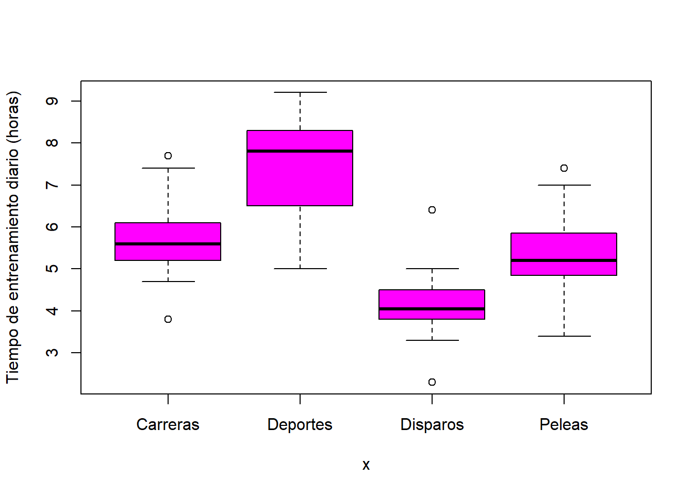
Corremos la prueba de análisis de varianza.
ANOVA =aov(Tiempo ~ Especialidad, data = D)summary(ANOVA)
Df Sum Sq Mean Sq F value Pr(>F)
Especialidad 3 112.35 37.45 40.05 3.62e-16 ***
Residuals 84 78.55 0.94
---
Signif. codes: 0 '***' 0.001 '**' 0.01 '*' 0.05 '.' 0.1 ' ' 1
Como el p-valor es muy pequeño, entonces rechazamos la hipótesis nula y concluimos que los tiempos de entrenamiento en al menos un tipo de juego son distintos.
Para saber que especialidades son diferentes, hacemos un análisis de pruebas múltiples mediante el método de Tukey.
Tukey =TukeyHSD(ANOVA, "Especialidad", conf.level =0.99)par(mar=c(5,10,5,5))plot(Tukey, las =2)
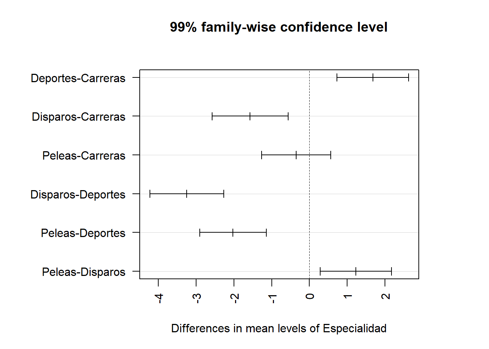
Aquí podemos ver que las únicas especialidades que no parecen ser distintas son Peleas y Carreras, con un 99% de confianza. Más aún, las especialidades que parecen ser más distinas, en términos del tiempo de entrenamiento, son Disparos y deportes.
Por último, validamos los supuestos del análisis de varianza.
plot(ANOVA)
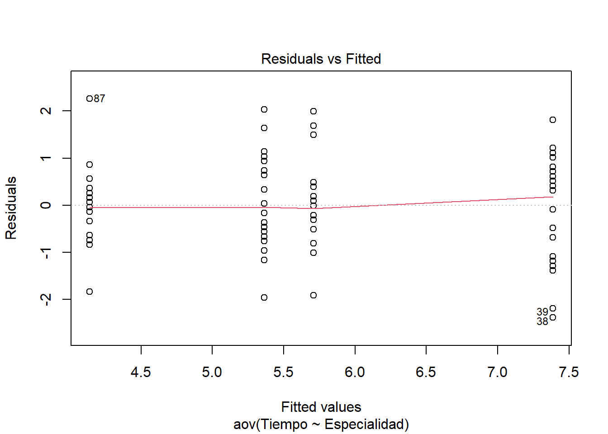
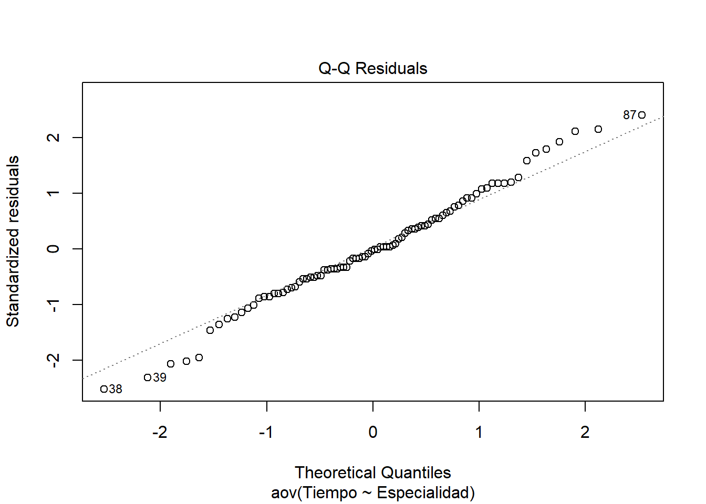
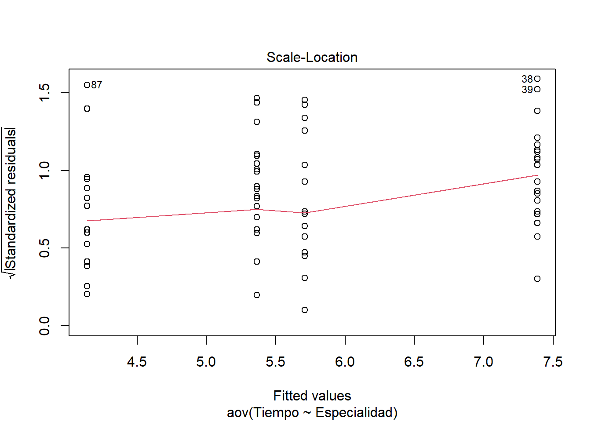
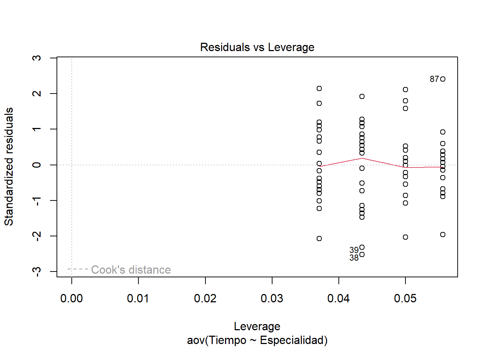
Visualmente, no observamos problemas con el supuesto de normalidad y de homogeneidad de varianzas. Esto se corrobora viendo los resultados de las pruebas de normalidad y homocedasticidad.
by(D$Tiempo, D$Especialidad, shapiro.test)
D$Especialidad: Carreras
Shapiro-Wilk normality test
data: dd[x, ]
W = 0.94342, p-value = 0.2781
------------------------------------------------------------
D$Especialidad: Deportes
Shapiro-Wilk normality test
data: dd[x, ]
W = 0.93536, p-value = 0.1427
------------------------------------------------------------
D$Especialidad: Disparos
Shapiro-Wilk normality test
data: dd[x, ]
W = 0.94402, p-value = 0.339
------------------------------------------------------------
D$Especialidad: Peleas
Shapiro-Wilk normality test
data: dd[x, ]
W = 0.97739, p-value = 0.7991
bartlett.test(D$Tiempo, D$Especialidad)
Bartlett test of homogeneity of variances
data: D$Tiempo and D$Especialidad
Bartlett's K-squared = 2.4857, df = 3, p-value = 0.4779
leveneTest(D$Tiempo, D$Especialidad)
Levene's Test for Homogeneity of Variance (center = median)
Df F value Pr(>F)
group 3 1.1494 0.3341
84
fligner.test(D$Tiempo, D$Especialidad)
Fligner-Killeen test of homogeneity of variances
data: D$Tiempo and D$Especialidad
Fligner-Killeen:med chi-squared = 3.1127, df = 3, p-value = 0.3746
Ejemplo 5: Consumo de calcio
Determinar si existe una diferencia en el consumo promedio diario de calcio en tres grupos de personas: con densidad ósea normal, con osteopenia y con osteoporosis. El análisis de varianza muestra que el grupo de personas con osteoporosis tiene menor consumo de calcio en comparación con el grupo control.
Pairwise comparisons using t tests with pooled SD
data: D$Calcio and D$Grupo
Control Osteopenia
Osteopenia 0.1097 -
Osteoporosis 0.0047 0.5347
P value adjustment method: bonferroni
Ejemplo 6: Analisis de dietas de pollos. Se realiza un estudio para comparar la efectividad de varios suplementos alimenticios en pollos. Los datos se encuentran en el dataset chickwts. La prueba anova revela que hay varios tipos de sumplementos que hacen diferencia en el peso de los pollos.
par(mar =c(5,10,5,2))plot(Tuk, las =2, cex.axis =0.9)
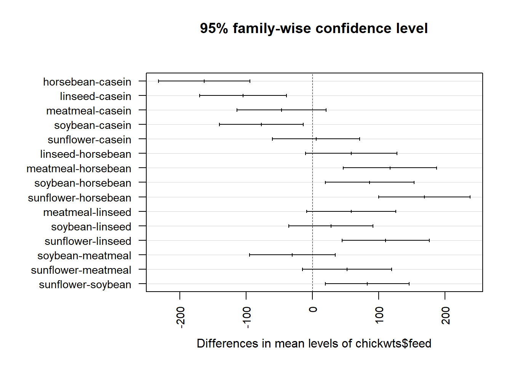
4.11.4 Tipos de ANOVA
Existen varios tipos de análisis de varianza.
ANOVA de un factor (unidireccional o una vía): Se utiliza cuando se tiene una sola variable independiente (factor) con más de dos niveles. Este tipo de ANOVA permite comparar las medias de varios grupos bajo un solo factor.
ANOVA de dos factores (bidireccional o dos vías): Se utiliza cuando se tienen dos factores (o variables independientes) y se desea analizar su efecto tanto de manera independiente como en interacción. Este tipo permite estudiar no solo los efectos principales de cada factor, sino también si existe una interacción entre ellos.
ANOVA de un factor con bloques: Se utriliza cuando existen factores de ruido que no pueden ser controlados. Para evitar los efectos de estos factores de ruido, se crean bloques con condiciones de ruido similares en los que se aplican todos los tratamientos.
ANOVA de medidas repetidas: Se usa cuando se tiene una variable dependiente medida varias veces en los mismos sujetos, como en estudios longitudinales o experimentos que implican mediciones en diferentes momentos.
4.12 ANOVA de dos vías
En un análisis de varianza de dos vías se tienen dos factores, es decir, dos aspectos del experimento que se pueden modificar. Cada factor tiene \(I\) y \(J\) posibles valores (niveles). De esta forma, un tratamiento es una combinación de los niveles de los factores. Los tratamientos determinan la cantidad de grupos que se van a comparar. Se desea saber si los factores tienen efectos individuales sobre la variable respuesta y efectos de interacción.
4.13 Modelo de ANOVA de dos vías
Se asume que las obseervaciones tiene la siguiente estrucutra:
\(Y_{ijk}\) es el valor observado para el \(k\)-ésimo individo del tratamiento generado por los niveles \(i\) y \(j\) de los factores 1 y 2, respectivamente;
\(\mu\) es la media global;
\(\tau_i\) es el efecto del \(i\)-ésimo nivel del factor 1;
\(\delta_j\) es el efecto del \(j\)-ésimo nivel del factor 2;
\(\gamma_{ij}\) es el efecto de interacción entre el nivel \(i\) del factor 1 y el nivel \(j\) del factor 2.
\(\epsilon_{ijk}\) es el error aleatorio de cada individuo, que sigue una distribución Normal con media cero y varianza \(\sigma^2\).
Las hipótesis a probar son:
\(H_0\): \(\tau_1 = \tau_2 = \dots = \tau_I = 0\) vs. \(H_1\): al menos un efecto es distinto de cero.
\(H_0\): \(\delta_1 = \delta_2 = \dots = \delta_J = 0\) vs. \(H_1\): al menos un efecto es distinto de cero.
\(H_0\): \(\gamma_{11} = \gamma_{12} = \dots = \gamma_{IJ} = 0\) vs. \(H_1\): al menos un efecto es distinto de cero.
Ejemplo. Se hace un experimento para analizar el efecto del estres mecanico y el nivel de luz sobre el crecimiento de plantas de soya. Para esto se usan dos niveles de estres (control, estres por 20 minutos) y dos niveles de iluminacion (baja y alta). Se mide el área de las hojas de las plantas. Los datos se encuentran en el archivo Soybean_plants.csv.
Comenzamos cargando los datos y haciendo un análisis descriptivo de los cuatro tratamientos posibles:
: Control
: Luz alta
Min. 1st Qu. Median Mean 3rd Qu. Max.
210.0 271.0 285.0 288.7 314.0 345.0
------------------------------------------------------------
: Estresado
: Luz alta
Min. 1st Qu. Median Mean 3rd Qu. Max.
201.0 257.0 269.0 268.8 291.0 326.0
------------------------------------------------------------
: Control
: Luz baja
Min. 1st Qu. Median Mean 3rd Qu. Max.
200.0 229.0 241.0 245.3 264.0 288.0
------------------------------------------------------------
: Estresado
: Luz baja
Min. 1st Qu. Median Mean 3rd Qu. Max.
163.0 195.0 212.0 212.9 230.0 272.0
El primer p-valor indica que los niveles de estrés tienen un efecto sobre el crecimiento de las plantas. EL segundo p-valor indica que el nivel de iluminación también tiene un efecto en el crecimiento. El útlimo p-valor nos indica que no hay efectos de interación entre los factores.
Una gráfica de interacción muestra los promedios de cada tratamiento. Esta gráfica nos permite entender los distintos efectos de los factores.
interaction.plot(x.factor = D$Estres, trace.factor = D$Iluminacion,response = D$Area, ylab="Area de las hojas",xlab="Nivel de estres", col=c("blue","black"),trace.label ="Nivel de luz")
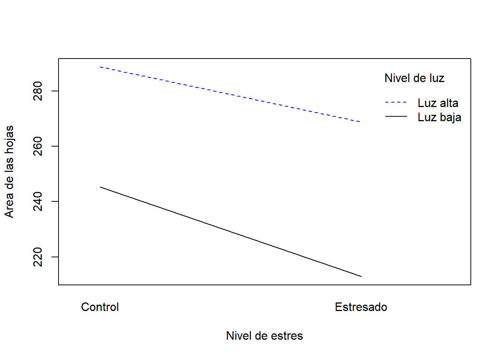
La gráfica de interacción muestra que estresar mecánicamenete a las plantas reduce el crecimiento, y esto es cierto ya sea que el nivel de luz sea alto o bajo. Por otro lado, el nivel de luz alto incrementa el crecimiento, lo cual es cierto sin importar si se está en el grupo control o en el grupo estresado. El hecho de que las líneas sean casi paralelas indica que no hay efectos de interacción entre los niveles estrés e iluminación.
Se pueden hacer un análisis de pruebas por pares para entender mejor las diferencias entre los tratamientos.
# Analisis de tratamientos por paresTuk =TukeyHSD(ANOVA)par(mar =c(5,15,2,2))plot(Tuk, las =2)
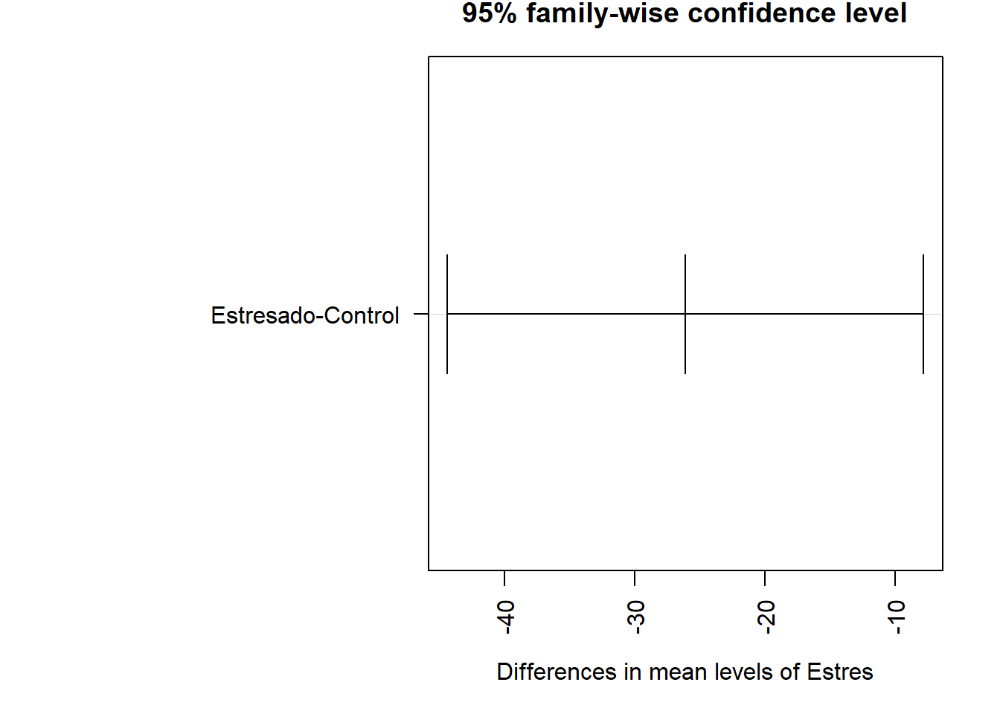
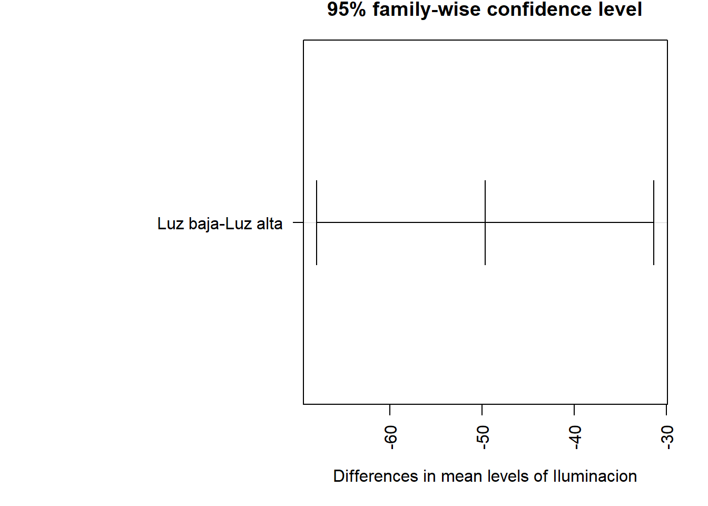
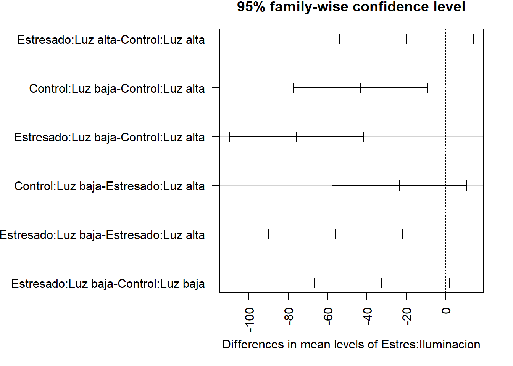
Ejemplo. Se aplican pinturas tapaporos para aeronaves en superficies de aluminio con dos métodos: inmersión y rociado. La finalidad del tapaporos es mejorar la adhesión de la pintura. Un grupo de ingenieros desea saber si hay diferencia entre tres tipos de tapaporos, además del método de aplicación. Para obtener una respuesta, se pintan tres piezas de aluminio con cada tapaporos y cada método de aplicación. Luego, se pintan las piezas con pintura y se mide la fuerza de adhesión. Los datos se encuentran en el archivo Tapaporos.csv. En base a los datos, ¿los ingenieros deberían recomendar algún tapaporos y/o algún método de rociado?